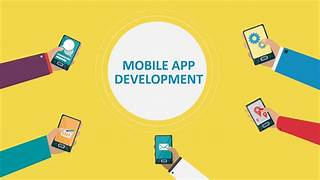

- Course 1: Web Developmentt

Creating a curriculum for web development is a comprehensive task, and the specific curriculum can vary based on the level of expertise you want to reach. Here, I'll provide you with a basic curriculum for web development, suitable for beginners. You can customize and expand upon this curriculum based on your goals and interests. **Web Development Curriculum:** **Phase 1: Introduction to Web Development** 1. **HTML (Hypertext Markup Language)** - Understanding the structure of web pages - Creating headings, paragraphs, lists, and links - Working with forms and basic form elements 2. **CSS (Cascading Style Sheets)** - Introduction to styling web pages - Changing fonts, colors, and backgrounds - Using CSS for layout and positioning **Phase 2: Intermediate Web Development** 3. **JavaScript** - Basics of JavaScript for enhancing web interactivity - DOM (Document Object Model) manipulation - Handling user events (e.g., click events) - Simple animations and transitions 4. **Responsive Web Design** - Media queries and breakpoints - Creating layouts that adapt to different screen sizes - Mobile-first design principles 5. **Version Control with Git** - Introduction to Git and GitHub - Cloning repositories, committing changes, and pushing to GitHub **Phase 3: Advanced Web Development** 6. **Front-End Frameworks (Choose one)** - React.js: Building user interfaces and single-page applications - Angular: Building dynamic web applications - Vue.js: Creating interactive web interfaces 7. **Back-End Development (Choose one)** - Node.js: Server-side JavaScript - Python (Django/Flask): Building Python web applications - Ruby on Rails: Creating web applications with Ruby 8. **Databases** - Introduction to databases (SQL and NoSQL) - Working with databases (e.g., MySQL, MongoDB) **Phase 4: Full-Stack Development** 9. **API Development** - Creating RESTful APIs - Consuming APIs in web applications 10. **Authentication and Authorization** - User authentication and access control - Implementing user sessions and cookies 11. **Deployment and Hosting** - Deploying web applications to hosting platforms (e.g., Heroku, Netlify, AWS, or Vercel) - Setting up domain names and SSL certificates **Phase 5: Advanced Topics** 12. **Performance Optimization** - Minimizing load times and optimizing for speed - Caching and content delivery networks (CDNs) 13. **Security** - Web security best practices - Handling common security vulnerabilities (e.g., cross-site scripting, SQL injection) 14. **Testing and Debugging** - Unit testing, integration testing - Debugging techniques and tools 15. **Additional Tools and Libraries** - Build tools (Webpack, Gulp) - Package managers (npm, yarn) - Task runners (Grunt) **Phase 6: Portfolio and Projects** 16. **Building a Portfolio** - Showcase your projects and skills - Create a personal website or portfolio 17. **Real-World Projects** - Develop web applications and websites to gain practical experience - Collaborate on open-source projects Remember, web development is a vast field, and the above curriculum provides a solid foundation. However, you can specialize further in areas like mobile app development, progressive web apps, or specific back-end technologies based on your interests and career goals. Continuous learning and staying up-to-date with industry trends are also essential in web development.
- Course 2: App Development 
Creating a curriculum for an app development course can be tailored to different platforms (e.g., mobile, web, desktop) and levels (beginner, intermediate, advanced). Below is an example of a curriculum for an introductory mobile app development course focusing on Android app development using Java: **Course Title: Introduction to Android App Development** **Course Duration: 10 Weeks** **Week 1: Introduction to Android Development** - Overview of mobile app development - Introduction to the Android platform - Setting up the development environment (Android Studio) - Creating your first Android project **Week 2: User Interface (UI) Design with XML** - Creating layouts using XML - Common UI elements (buttons, text views, image views) - Layout types (Linear, Relative, Constraint) - Handling UI events and interactions **Week 3: Java Programming Fundamentals** - Introduction to Java for Android - Variables, data types, and operators - Control structures (if statements, loops) - Functions and methods **Week 4: User Interface Design (Part 2)** - Creating interactive UIs - Fragments for modular UI design - Material Design principles - Designing for various screen sizes **Week 5: Working with Lists and Adapters** - Building lists with RecyclerView - Custom adapters for data binding - Handling item click events - Implementing data-driven UI **Week 6: Navigation and App Architecture** - App navigation and the Navigation Component - Introducing the Model-View-Controller (MVC) pattern - Separation of concerns in Android development **Week 7: Storing and Managing Data** - Local data storage with SharedPreferences - Working with SQLite databases - Saving data with SharedPreferences and SQLite **Week 8: Networking and API Integration** - Making HTTP requests using Android's built-in libraries - Handling API responses and data parsing - Displaying remote data in your app **Week 9: Debugging, Testing, and Deployment** - Debugging techniques and tools - Testing on emulators and real devices - Preparing and publishing an app to the Google Play Store **Week 10: Final Project and Course Recap** - Students work on a final project (e.g., building a simple app) - Presentation of final projects - Review of key concepts and next steps in app development **Course Assignments and Assessments:** - Weekly coding exercises and projects. - Mid-term project related to UI and app functionality. - Final project, where students create a complete Android app. - Quizzes and assessments to evaluate understanding of course content. **Recommended Reading and Resources:** - Online tutorials and documentation from the Android Developer website. - Books and online courses focused on Android development. - Community forums and developer resources for additional learning and support. This curriculum focuses on Android app development using Java. You can adjust it to cover other platforms like iOS using Swift, cross-platform development with frameworks like Flutter or React Native, or more advanced topics for an intermediate or advanced course.
- Course 3:Basic to expert computer
Becoming an expert in computer science is a journey that involves a deep understanding of various concepts, languages, and technologies. Below is a general roadmap from basic to expert levels in computer science, with a focus on coding and software development: **Beginner Level:** 1. **Programming Fundamentals:** - Learn a beginner-friendly language like Python. - Understand variables, data types, and basic control structures (if, loops). - Practice simple programming exercises and small projects. 2. **Data Structures and Algorithms:** - Study basic data structures (arrays, lists, and dictionaries). - Learn about algorithm complexity and Big O notation. - Solve problems and algorithms on platforms like LeetCode and HackerRank. 3. **Web Development Basics:** - HTML, CSS for front-end. - Basic JavaScript for front-end interactivity. - Set up a simple website or web application. **Intermediate Level:** 4. **Object-Oriented Programming (OOP):** - Learn OOP concepts (classes, objects, inheritance, and polymorphism). - Practice OOP in a language like Java, C++, or C#. 5. **Database Management:** - Introduction to SQL and relational databases. - Create, query, and manipulate databases. 6. **Web Development and Frameworks:** - Dive deeper into front-end technologies (JavaScript, CSS frameworks like Bootstrap). - Explore back-end development with a framework (e.g., Node.js, Ruby on Rails, Django). - Build interactive web applications. 7. **Version Control and Collaboration:** - Learn Git for version control. - Collaborate on open-source projects or with peers using platforms like GitHub. **Advanced Level:** 8. **Advanced Data Structures and Algorithms:** - Study more advanced data structures (trees, graphs, etc.). - Master complex algorithms for sorting, searching, and optimization. 9. **Database Systems and NoSQL:** - Explore NoSQL databases like MongoDB. - Optimize database performance and scaling. 10. **Software Design Patterns:** - Learn common design patterns (Singleton, Factory, MVC, etc.). - Apply design patterns in real-world software projects. 11. **Advanced Web Development:** - Full-stack development, including authentication and authorization. - Explore cloud-based technologies and deployment. **Expert Level:** 12. **Specialization:** - Specialize in a specific field (e.g., machine learning, artificial intelligence, cybersecurity, or blockchain). - Contribute to research or create innovative projects. 13. **Contributions and Leadership:** - Contribute to open-source projects. - Publish articles, books, or research papers. - Mentor others and lead teams. 14. **Stay Current:** - Keep up with the latest advancements and trends in computer science. - Attend conferences, webinars, and workshops. 15. **Continuous Learning:** - The journey doesn't end; continue learning and improving your skills. This roadmap provides a general outline, but the specific path may vary based on your interests and career goals in computer science. To become an expert, it's essential to continually practice, work on challenging projects, and stay updated with industry developments.